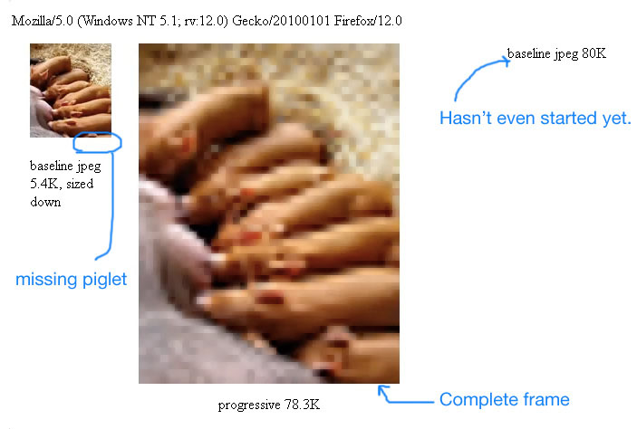

@media only screen and (-Webkit-min-device-pixel-ratio: 1.5),
only screen and (-moz-min-device-pixel-ratio: 1.5),
only screen and (-o-min-device-pixel-ratio: 3/2),
only screen and (min-device-pixel-ratio: 1.5) {
.icon {
background-image: url(example@2x.png);
}
}
Optimization of images
Retina (HTML Path)
Signature
Optimization of images
Progressive jpegs

How browser works
HTML Parsing
CSS Parsing
Dom Tree
Render Tree
Linkage
Rendering
Compositing (CPU)
Page is divided into layers
Layers are rasterized
Layers are displayed on the screen
GPU Accelerating Composition
Page is divided into layers
Layers are rasterized into textures
Textures are loaded into the GPU
Compositor instructs the GPU how to collect the final image